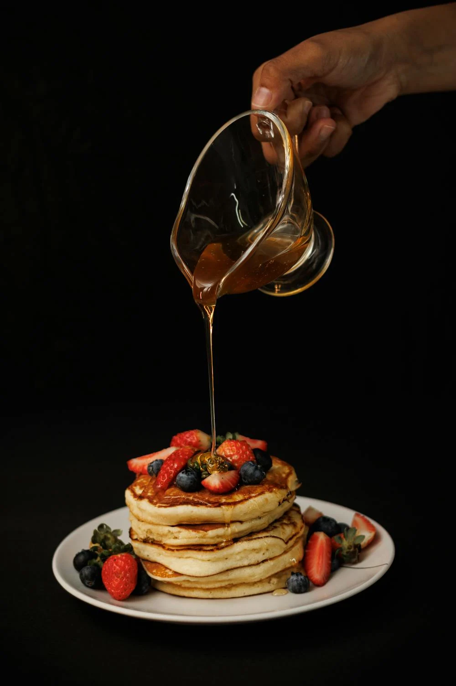
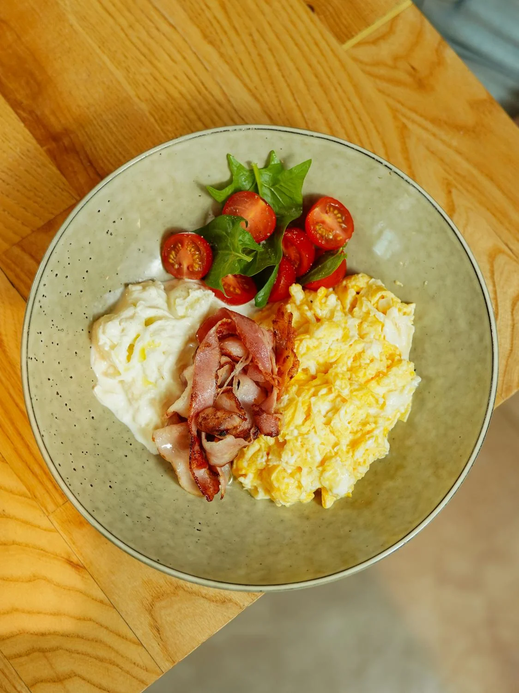

This rustic tavern is the place to go for good food, friendly conversation, and of course—a Butterbeer ™. The cosy, snow-capped inn is the place where Harry Potter ™ had his first taste of the sweet wizarding drink. Through the centuries, the Three Broomsticks ™ has welcomed countless Hogwarts ™ students including Harry and his friends. Inside you'll notice details such as cast-iron chandeliers, weathered wood beams, and balconies brimming with curious bric-a-brac. Take a seat and have your fill of tasty British fare including 'The Great Feast', Fish And Chips, Shepherd's Pie, Beef Pasties, Turkey Legs, and Fresh Vegetables.
-
Cornelius Fudge

- This cozy restaurant has left the best impressions! Hospitable hosts, delicious dishes, beautiful presentation, wide wine list and wonderful dessert. I recommend to everyone! I would like to come back here again and again.  
-
Dean Thomas
- Excellent food. Menu is extensive and seasonal to a particularly high standard. Definitely fine dining. It can be expensive but worth it and they do different deals on different nights so it’s worth checking them out before you book. Highly recommended.
-
Sirius Black

- We are so fortunate to have this place just a few minutes drive away from home. Food is stunning, both the tapas and downstairs restaurant. Cocktails wow, wine great and lovely selection of beers. Love this place and will continue to visit.
-
Severus Snape
- Took an hour to get food. Food was dry and not cooked well and my friend found hair in her food. It was a busy night I get it, but worst service I have ever experienced. Go ANYWHERE else.
{kind=link}
{kind=link}